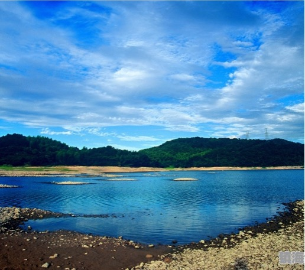
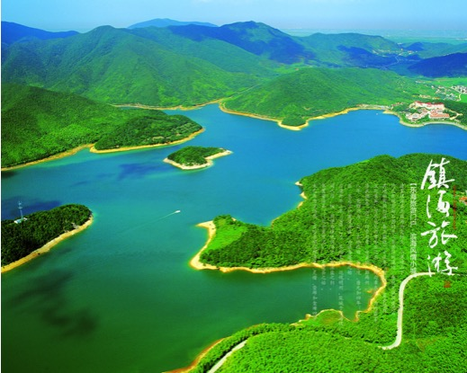

关于九龙湖
九龙湖风景区地处浙江省宁波市镇海区西北部的九龙湖镇境内，距镇海城区28公里、宁波市中心27公里，总面积36平方公里，镇海九龙湖风景区是宁波市十佳新景之一。旅游区为中丘地貌，三面环山，群山环抱的九龙湖、凤凰湖、月亮湖和天鹅湖四大湖泊，水域面积达2平方公里， 整个旅游区自然生态环境优越、历史人文积淀深厚。
九龙湖系人工湖泊，原称十字路水库，始建于1977年，湖方圆20华里，水容逾2000万立方米。九龙湖位于宁波市东北镇海区内。乘骆驼方向的汽车到河头下车，不一会你就可以见到一座高大的石牌坊式的迎宾门，沿坡而上，九龙湖山水画面就呈现在眼前：群山怀抱，层峦叠嶂，水势浩淼，碧波荡漾，湖光山色，相互映辉。山水之间，时而轻烟缭绕，山色蒙蒙，时而烟消雾散，碧空如洗。湖东侧红瓦白墙的建筑群，就是西班牙别墅式的九龙山庄。把九龙湖点缀得更加美丽。
在湖的东北面，有座大蓬山，又名达蓬山。海拔315米，山势峥嵘，崖岩危突，登顶可眺望东海。山分前达蓬和后达蓬，散有岩洞、佛迹、宋代崖刻、斗鸡峰、方腊寨等多处名胜古迹，是历代文人墨客喜爱涉足之地。志书载“秦始皇东游，欲自此航海达蓬莱仙境，故名。”明末著名思想家黄宗羲游达蓬山时曾作《海市赋》，认为“蓬莱”乃是“海市”。他在《达蓬纪游》诗中，有“东尽观沧海，往事一慨然。浪物鼓万叠，鲸背血千年。何物作始皇，于此求神仙”之句。


